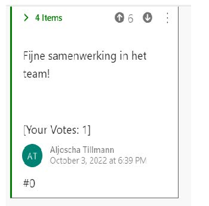
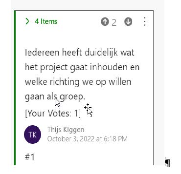
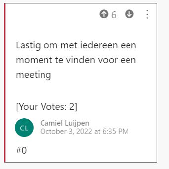
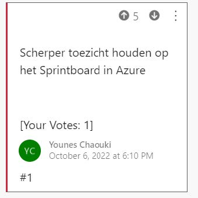
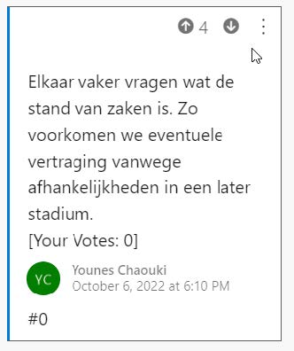

REFLECTIE
BACKLOG 1
In een retrospective komen wij als groep bij elkaar om de afgelopen sprint te evalueren. Wij hebben gekozen om dit in Azure DevOps structuur te geven. Iedereen mag zo veel zaken als gewenst vastleggen. Deze worden dan aan de groep toegelicht en vervolgens mag worden gestemd. Per categorie (Goed, Slecht, Ideeën) komen de zaken met de meeste stemmen naar voren. Hier gaan wij vervolgens nog intensiever op in en bespreken concrete stappen voor de volgende sprint.Een opname van de hele retrospective is te vinden in Teams: https://teams.microsoft.com/l/meetup-join/19%3aZHOU- 3JSQVAhfBc09jJlBWvX5wkocgZaxjGNC5WFsSGA1% 40thread.tacv2/1664957614348?context=% 7b%22Tid%22%3a%22c66b6765-b794-4a2b-84ed- 845b341c086a%22%2c%22Oid%22%3a%228f7e6e58-f1ae-4527- 8fe8-244e55e8b082%22%7d
POSITIEVE PUNTEN
Hier de belangrijkste punten op een rij: Waar zijn wij trots op? Wat gaat goed?
Iedereen was tevreden over de samenwerking in de groep. Dit geldt zowel voor de disciplines als ook in het geheel.
NEGATIEVE PUNTEN
Wat kan beter?
Naast de vaste lesavond op maandagen is het lastig om met onze groep een ander moment in te plannen om te voortgang van zaken te bespreken. Dit ligt aan meerdere factoren, waarvan de belangrijkste is dat voor alle disciplines op een ander tijdstip het overleg met de vakdocent gepland is. Verder zijn wij eens dat er avonden moeten zijn waar men aan zijn eigen opdrachten werkt of waar men niet met de studie bezig is. Younes en Aljoscha gaan een plan uitwerken die beter aansluit bij een werkbare situatie. Dit kan tijdens de volgende fysieke sessie besproken en afgetikt worden. Het tweede punt is eveneens belangrijk. Zonder DevOps bij te werken en de zaken kort en bondig te houden is er geen overzicht voor de Scrum-Master en de andere groepsleden om van buitenaf te beoordelen hoe de vooruitgang van het project als geheel is.
Zijn er ideeen om mee te nemen naar de volgende sprint?

Dit sluit aan bij categorie “goed”. Wij hebben na aanleiding van dit idee afgesproken om op de onderlinge communicatie te blijven letten en nog meer te proberen met de medestudenten te schakelen die in een andere discipline werken. Wij willen immers de positieve indruk van de eerste weken bevestigen. Waar staan wij inhoudelijk? Wij zij tevreden over het begin van onze proftaak. Er zijn opzetten voor het design van website, verschillende logo’s om te kiezen en een basis om verder op te bouwen. De volgende sprint zouden wij ons moeten focussen op het afleveren van een werkende platform.